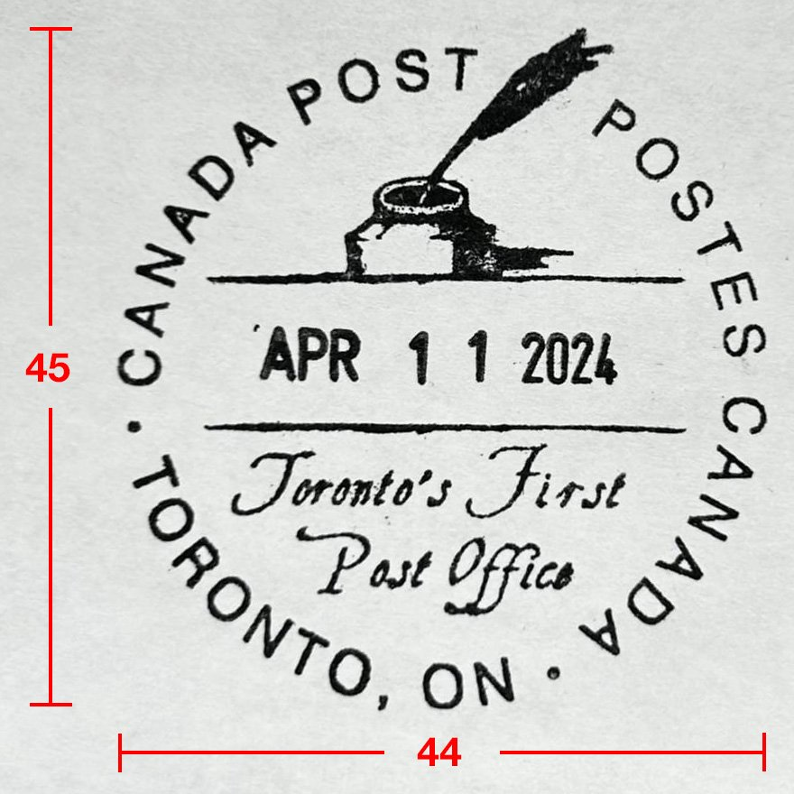

Town of York PO pictorial cancel
Toronto's First Post Office
- Status
- Active
- Run dates
- ? to present
- Design
- "Toronto's First Post Office"; quill, ink bottle
- Ink colour
- Black
- Designer
- Unknown
- Post office
- Town of York PO
260 Adelaide St E
Toronto, ON
M5A 1N1 - Subjects
- museum, post office, writing instrument, quill, ink, NHS
- Notes
- This post office also offers 2 souvenir marks that are not postmarks.
Collect it by mail. Send your stamped covers, with a stamped return envelope, to the post office address above (check the notes first). How to collect pictorial cancels by mail · en français
 Toronto STN AtriumToronto cityscape
Toronto STN AtriumToronto cityscape Bay and Gerrard POCN Tower / La tour CN
Bay and Gerrard POCN Tower / La tour CN Toronto Station KVersion 2
Toronto Station KVersion 2 Major Mackenzie POOBSERVATOIRE DAVID DUNLAP OBSERVATORY
Major Mackenzie POOBSERVATOIRE DAVID DUNLAP OBSERVATORY Newmarket STN MainNewmarket Clock Tower
Newmarket STN MainNewmarket Clock Tower